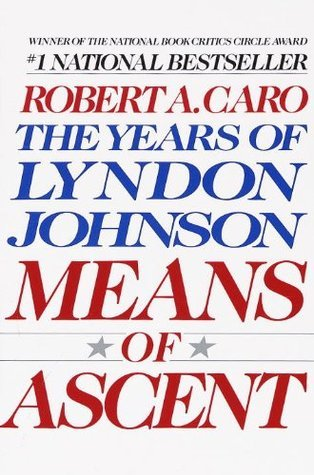

Means of Ascent
- Read on 2024-02-19
- Rating: ️️️️️
- Format: 🎧 (22 hours 8 minutes)
Robert A. Caro continues to write so well. He writes so well, that despite so many detestable characteristics of Lyndon B. Johnson, I don't feel like I can look away. Again, Johnson has some great qualities, but since it feels like half of this book is dedicated to his campaign for senator in 1948, where he blatantly stole an election, the negative characteristics stand out even more prominently than before. I'm not new to the ideas of stuffing ballot boxes, block voting, buying votes, etc. Johnson had done that previously (and others I've read about before have done it as well). But the blatant manner of doing it, and then bragging about the actions seems to be new territory for me. For a man so desperate for approval and power, and I can only imagine how horrendous Johnson will behave as senator. Not just a senator, but one who will end up in the most powerful office in the world. Caro's writing is second to no biographer I've read.
- Prior: Start with Why
- Next: Murtagh